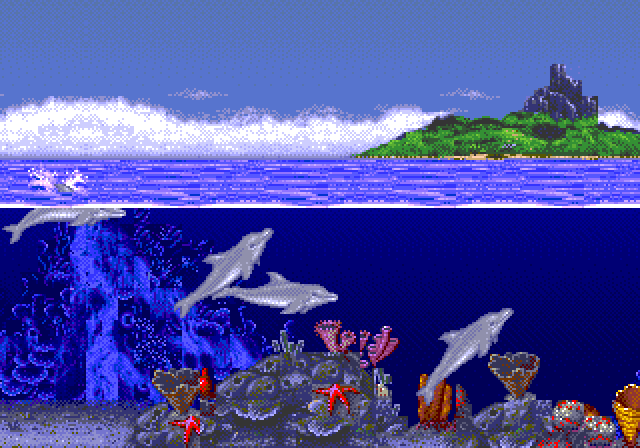
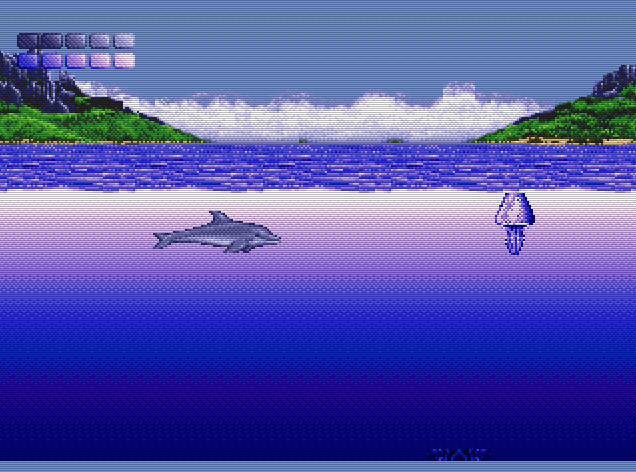
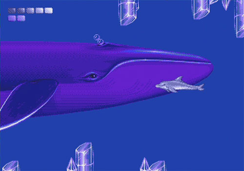
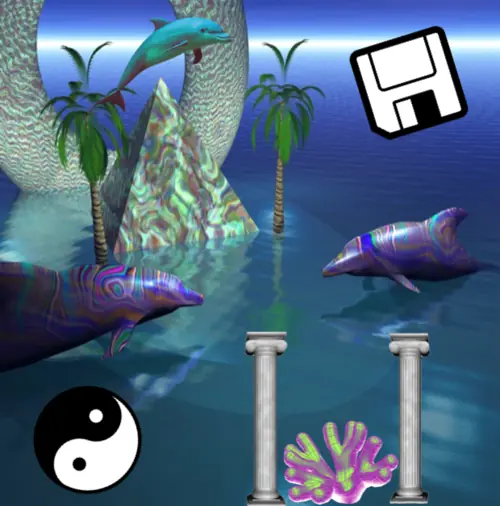
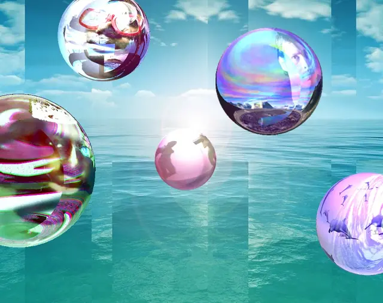
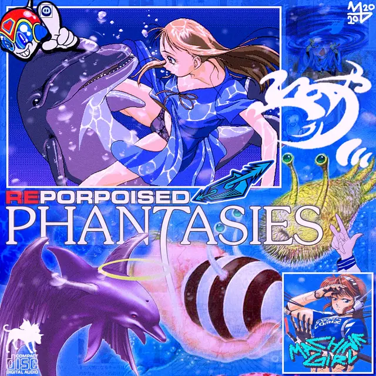
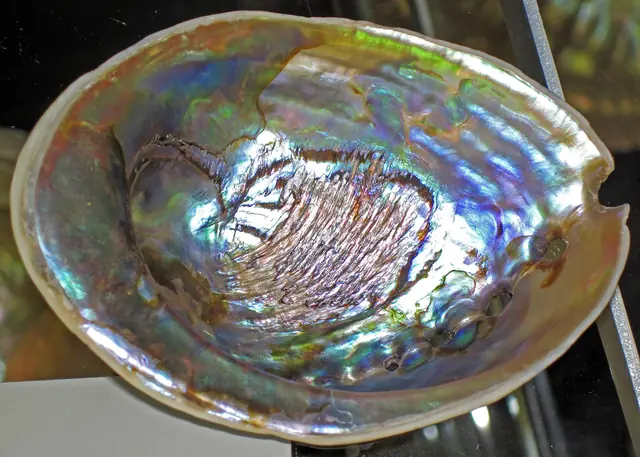

The feel
Seapunk is, in Zombelle's words, "an extreme aquatic fantasy".1 The New York Times saw a whimsical mix of cartoon sea themes, rave culture and nostalgia for 90s internet imagery.2 Picture turquoise water, cheaply rendered 3D, and dolphins and yin-yangs drifting through it.3,4
It works because it is in on the joke: the New York Times called seapunk "an inside Web joke that feeds off its own ridiculousness", and Pitchfork's Mark Richardson saw "an overriding awareness of the absurdity involved" as part of the appeal of microgenres like it.2 Underneath sits a cyber-utopian outlook, updated "for the era of the animated GIF".3
- aquatic
- iridescent
- weightless
- chrome
- half-joking
- dashboard-brained
Where it comes from
In June 2011 the DJ Lil Internet woke from a dream, tweeted about a "seapunk" leather jacket encrusted with barnacles instead of studs, and told Lil Government, who hashtagged #seapunk for the first time.5,2 A loose group on Twitter traded seapunk jokes all summer,5 and Ultrademon and Zombelle built it into a scene, moving to Chicago that December, where Ultrademon's new label Coral Records was already "seapunk's center of gravity".3 Tiny Mix Tapes described the look that year as based largely on aquamarine-dyed hair and the Sega Genesis game Ecco the Dolphin.6 In November 2012 Rihanna sang "Diamonds" on Saturday Night Live in front of crudely animated dolphins, digital palm trees and floating spheres,1 Azealia Banks released "Atlantis" the next day, and the scene accused both of borrowing its look.7
Core elements
Turquoise palette
Seapunk is built on ocean imagery and the colour turquoise,3 down to its trademark blue hair.1 On Tumblr it spread as an endless stream of dolphins, unicorns and pink-and-teal memes.7
Clip-art ocean icons
The New York Times listed its icons: clip-art dolphins leaping through pyramids, mermaids with aquamarine hair and SpongeBob T-shirts, and psychedelic orbs flying over computer-generated waves.7 SPIN put yin-yangs first on its list.4 Mermaids are disputed: when Azealia Banks took them up, fans protested that mermaids aren't seapunk.1
Cheap 1990s CGI
Tiny Mix Tapes wrote of "tacky CGI renderings of New Age oceanscapes",6 and SPIN of 3D renderings "cribbed from '90s fashion and early web memes".4 The Chicago Reader saw graphics heavy with Omni-style mock chrome, "a la the Netscape-era Internet".3
Spinning GIFs and screensavers
Rihanna's seapunk backdrop looked as if it "had originated as spinning gifs on an ancient Geocities website".7 Vice counted screensaver graphics and cloudy horizons among the things seapunk shares with vaporwave.8
Tumblr collage
Its real home was Tumblr, whose interface encourages reposting other users' material.3 Tiny Mix Tapes traced the look to Tumblr's "endless blogging and reblogging of images, animated GIFs, Vimeos, and SoundCloud demos",6 and in that "churning remix engine", techno-utopian ideas, turquoise hair dye and rap beats could cohere into one package.3
Cyberpunk influences
The first jokes brought in cyberpunk, with talk of sitting on a beach with unlimited bandwidth and seasteading beyond government reach.5 The Daily Dot saw deliberate cyberpunk in its computer-generated technology, pixellated everything and endless flow of images,7 and Ultrademon told Interview, "It's cyberpunk to me."1
How to do it
Shade the water
Seapunk's sea is made of computer-generated waves.7 Start the water with a dark blue base colour, RGB 0.1, 0.3, 0.5, no metalness and a roughness of 0.01, because most of the blue should come from the reflected sky.9 Switch to toon-style specular for bigger highlights, add a rim light of 0.2, and fake the Fresnel effect with the square root of one minus the dot product of the surface normal and the view direction; then darken the base colour to 0.01, 0.03, 0.05.9
Animate the waves
Build the wave height from four layers of a wave function, scaling the position by 0.4, 0.3, 0.5 and 0.6 and the results by 0.3, 0.3, 0.2 and 0.2, which add up to 1.0.9 Add time in two layers and subtract it in the other two, so the waves move in different directions.9
Add chrome objects above the water
Dolphins, pyramids, orbs and yin-yangs hang over the water,7,4 often in mock chrome.3 For chrome, push metallic close to 1.0: the surface then almost ignores its base colour and looks like a mirror of the sky.9
Export the clip art as GIFs
Seapunk's icons are clip art, and its motion comes as GIFs.7,4 A GIF palette has at most 256 entries, with dithering to suggest more colours, and a pixel is either opaque or fully transparent, so cut-outs keep hard edges.10
Add caustics to the sea floor
One trick, from Jos Stam, is an animated caustic texture blended additively over the floor's textures.11 For sharper caustics, refract a mesh of light rays through the waves and set each triangle's brightness by the ratio of its original area to its final area.12 Water absorbs 20 to 23 percent of the light per metre, so caustics form most easily where the light has the shortest way to the floor.11
Write the music
Mix bits of 90s house and techno, pop and R&B, and southern trap, then lay a twinkly, narcotic shimmer over it that recalls new-age music and chopped-and-screwed mixtapes.3 Tiny Mix Tapes heard "a hyperactive hybrid of rave and Baltimore House".6
Cheat sheet
- Water
- Metallic 0.0, roughness 0.01, rim 0.29
- Water colour
- RGB 0.1, 0.3, 0.5, darkened to 0.01, 0.03, 0.059
- Fresnel
- √(1 − N·V), with N the normal and V the view direction9
- Waves
- Four layers, scales 0.3 to 0.6, heights adding up to 1.09
- Chrome
- Metallic close to 1.0, a mirror of the sky9
- GIFs
- Up to 256 colours, dithered, one transparent index10
- Caustics
- Additive pass, water IOR 1.3311
Do
- Make turquoise the base, from the sea to the characters' hair.3,1
- Dress the characters for it. Zombelle counts fashion as part of seapunk,1 and the first jokes were about crab-claw earrings, fishnet and seaweed.5
- Let things spin and loop, like GIFs on an old GeoCities page.7
- Keep the joke visible. Tiny Mix Tapes called seapunk the "most willfully absurd" of the Tumblr microgenres.6
- Keep it hopeful. Seapunk carries the rave ideals of peace, love, unity and respect.3
Avoid
- Just putting a dolphin on it. Zombelle prefers artists who bring their own style to ones who mimic the scene.1
- Expensive, realistic rendering. SPIN called the look "cheaply rendered goopy imagery".4
- Model homes, Shibuya billboards and corporate gloss. That is vaporwave, which shares seapunk's nostalgia for 90s internet culture but not its pastel seashells.8
- Dark, threatening seas. Ultrademon says they were all attached to a "digital kind of paradise".3
- Taking yourself too seriously. Ultrademon would "rather look a little humorous" while making something good.1
Tools and tutorials
- Your second 3D shader
Godot's stylised water shader, the base for the how-to above.9
- Realtime caustics in WebGL
Evan Wallace gets caustics from the ratio of a light mesh's original area to its final area.12
- WebGL Water
Wallace's 2011 WebGL demo of a pool with realtime caustics.12
- GPU Gems: Rendering Water Caustics
How to fake caustics cheaply in real time.11
- CARI: Seapunk
The Consumer Aesthetics Research Institute's collection of references.
Palette
Ecco blue and spray come from the Ecco the Dolphin cover, cyan, shallows and trench from Defender of the Future, slick and indigo from Seapunk is Alive!, and magenta from Pirate Utopias.
Feel the vibe
Listen
By one of seapunk's two main architects.3 The Chicago Reader heard the scene's music as house, R&B and trap overlaid with "a twinkly, narcotic energy".3
YouTubeFrom Ecco on the Sega CD. Its creator asked for a score that didn't sound human, so Nilsen built a palette of ocean-inspired synth instruments.13
YouTubeOn the Mega Drive, programmers in Japan and at Novotrade approximated Nilsen's CD score on the console's six-voice FM chip.14
YouTubeReleased the day after Rihanna's Saturday Night Live performance, and called out by the scene for borrowing its look.7
YouTubeWintory wrote ABZU's blue whale scene as a grand waltz, and the scene was designed around the music.15 For when you want the ocean to feel sacred, not silly.
YouTubeCompare its dolphin-and-shell cover, in the gallery, with seapunk's early clip art.
YouTube
More references







Games
- Ecco the Dolphin
Study the backgrounds and the crystal glyphs. Tiny Mix Tapes saw seapunk's look as based largely on this game and aquamarine hair.6
- Ecco: The Tides of Time
The sequel to the game seapunk borrowed from. Compare its seas and crystal glyphs with the first game's.
- Ecco the Dolphin: Defender of the Future
Study its neon coral and sunken temples in early 3D.
- SEAQUEST1992
A free jam game about becoming a merperson, in N64-era 3D. Kill Screen found its oceanic lifestyle and mythology partly seapunk.16
Film, art and more
- Seapunk Washes Up
Lil Internet and Lil Government's own account of how the joke became a scene.5
- Atlantis
Directed by the French graffiti writer Fafi. The scene accused it of borrowing seapunk's look.4
- Omni
The Chicago Reader compared seapunk's mock chrome to Omni's.3
- Bryce
A visual parallel worth studying for glossy seas and gradient skies.
- Vaporwave
The neighbour: the same nostalgia for 90s internet culture, with corporate imagery in place of seashells.8
Sources
- 1Zombelle and Ultrademon, Seapunks Next Door
- 2NYTimes Profiles Seapunk
- 3The week seapunk broke
- 4Seapunks Salty Over Rihanna and Azealia Banks’ ‘Net Aesthetics
- 5Seapunk Washes Up: The Untold Story Behind the Microniche
- 62011: Dispatches from the Pop Museum: The Future Is Not What It Used to Be
- 7Why Rihanna’s “seapunk” is about more than just dolphins
- 8Is Vaporwave The Next Seapunk?
- 9Your second 3D shader
- 10Image file type and format guide
- 11Chapter 2. Rendering Water Caustics
- 12Rendering Realtime Caustics in WebGL
- 13Interview: Spencer Nilsen (Composer)
- 14Interview: Game Music, According To Spencer Nilsen
- 15‘ABZÛ’ composer Austin Wintory on his ambitious video game score
- 16Let this vaporwave adventure wash over you